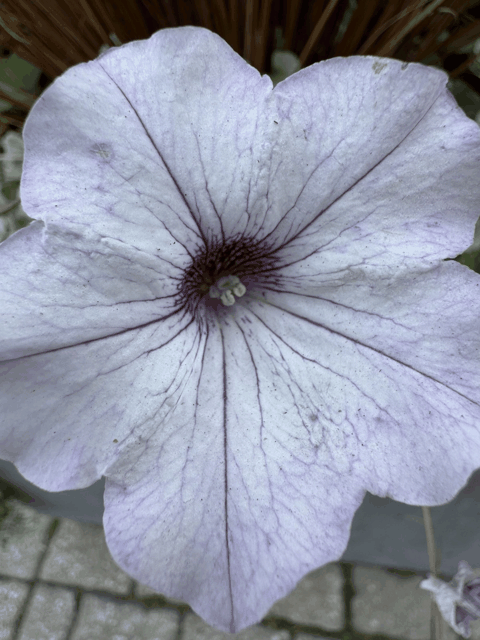
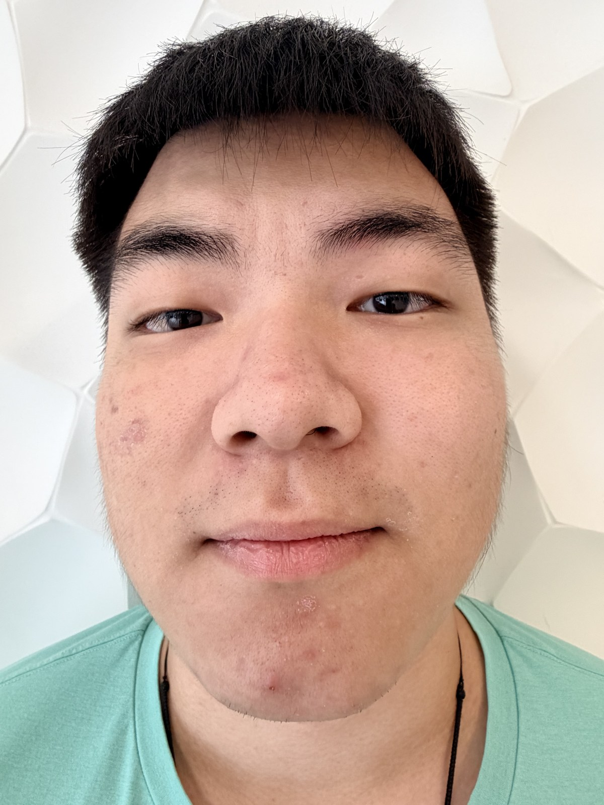
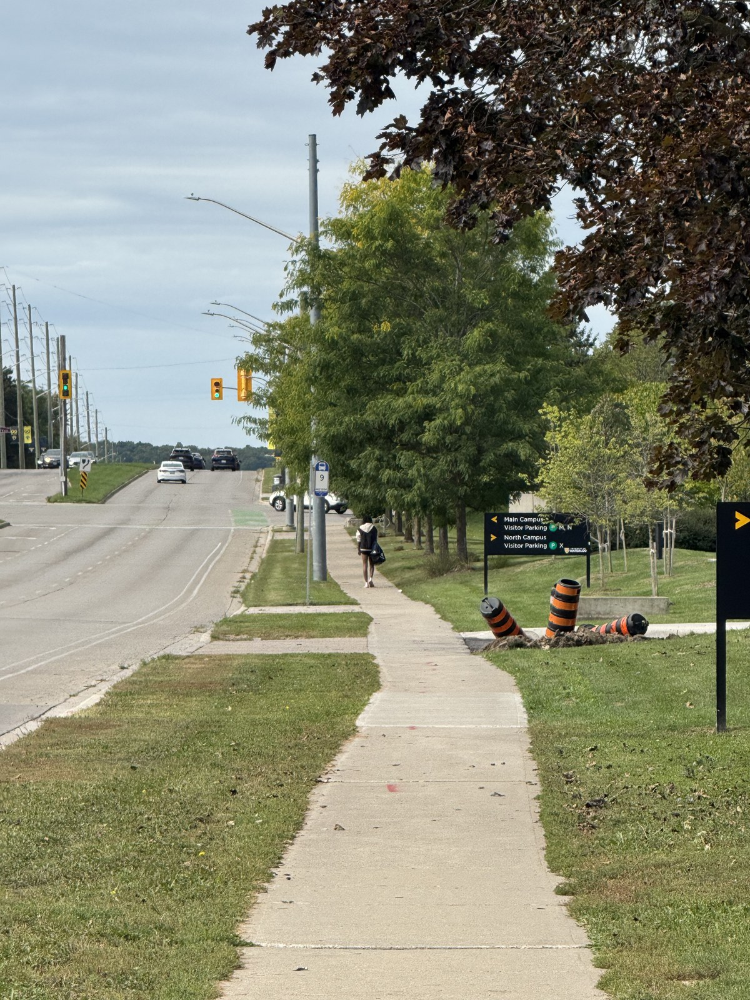
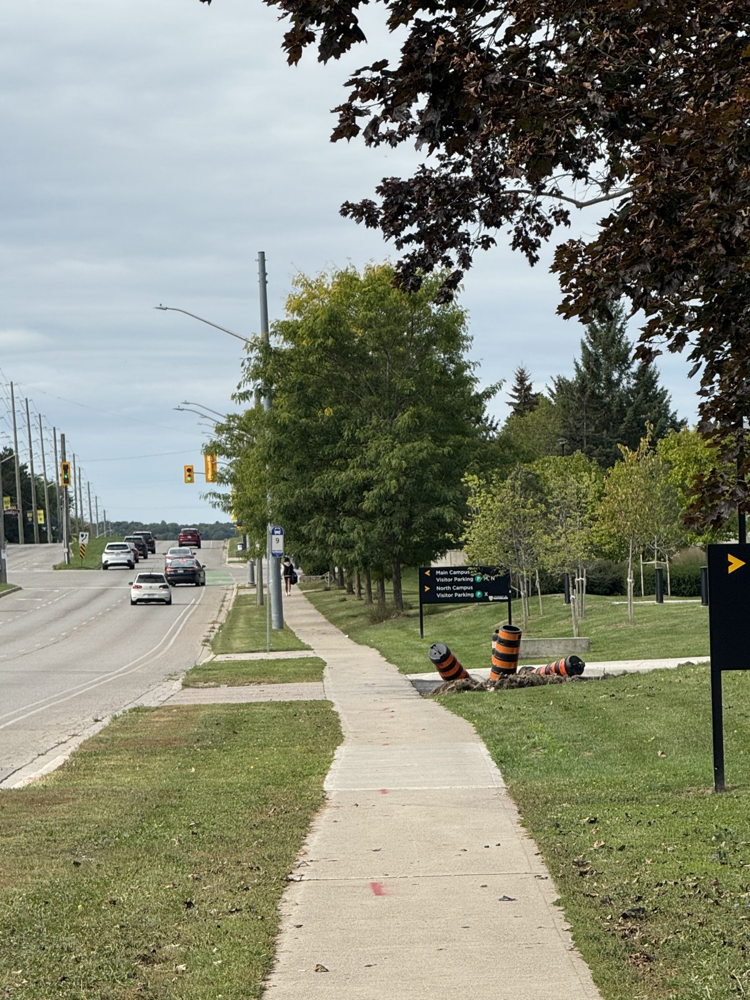
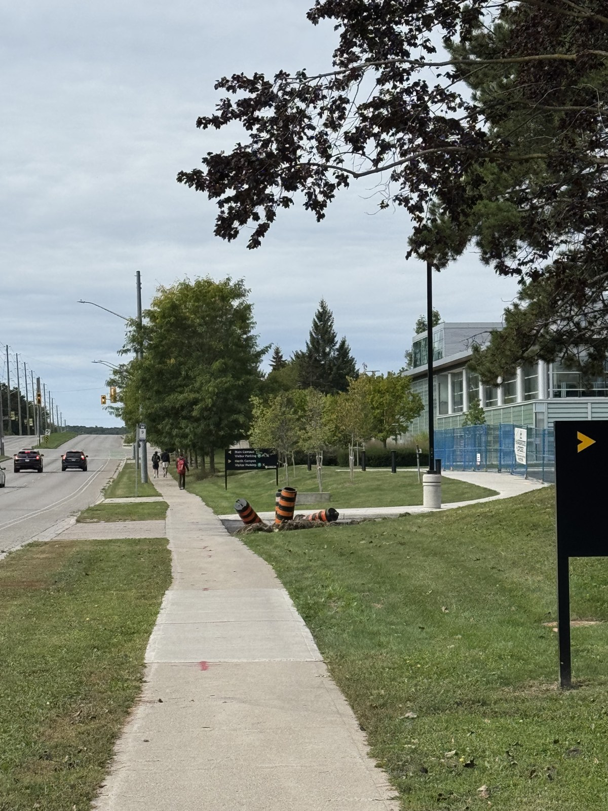
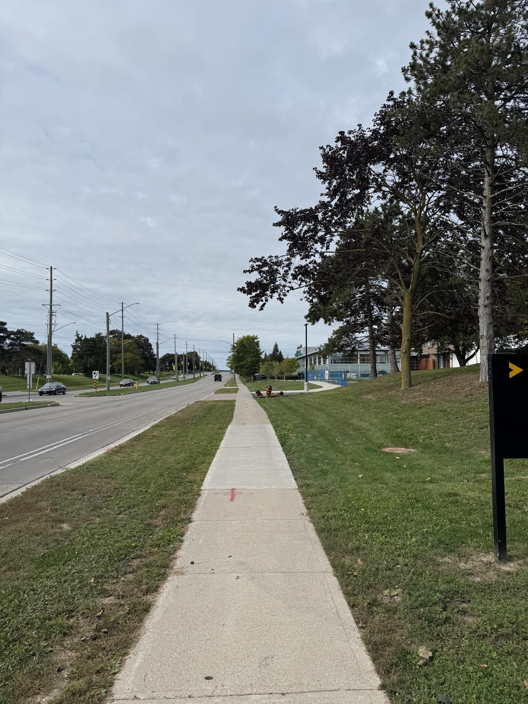

The motion study
ANIMATED GIFFRAME 01 · NEAR

Near → far → near. A continuous, reversing loop.
One camera. A change in distance. A different perspective.
Exploring how where we stand changes what we see.
From 10 cm to one metre away, I stepped back and increased the zoom to keep my face at a similar size. The change in facial proportions tells the story.
10 cm away

ORIGINAL15 cm away
20 cm away
40 cm away
100 cm away
This is because, according to the formula y = −(f/Z)Y, when taking a close-up selfie, the nose is closer to the camera than the ears or cheeks, and this difference in distance accounts for a significant proportion of the total distance. Therefore, the nose and other parts relatively close to the camera look bigger, while the ears and the sides of the face look smaller. The face appears longer and more protruding, and its front-to-back depth is exaggerated.
When we move back, the ratio of these distances becomes closer to one, so the face looks more natural. Zooming in only changes the composition of the picture, while distance changes the appearance.
Distances and focal-length labels follow the filenames. Face size and pose are approximate. The Easter eggs are a playful extra, separate from the photographic comparison.
A sequence along the same sidewalk, reducing the zoom as the viewpoint moves forward. Watch the spacing between the trees, lamp posts, and distant buildings.

IMG_8609 · Longest focal length

IMG_8610 · Moving forward

IMG_8613 · Moving forward

IMG_8615 · Widest view
In the distant, zoomed-in view, objects at different depths have more similar distances from the camera. Their relative sizes differ less, making the trees and lamp posts appear stacked together. In the closer, wider view, the foreground becomes more prominent and the sidewalk recedes more strongly.
The camera position creates this change in perspective. The focal length controls how much of the scene fits in the frame. These handheld views illustrate the trend, although the framing is not exactly matched.
Focal lengths are 35 mm equivalents read from the original photos’ EXIF metadata. Select any photo to view it larger.
Eleven photographs, taken from near to far while increasing the zoom. The flower stays roughly the same size as the background changes around it.

Near → far → near. A continuous, reversing loop.
Drag the slider, use the arrow keys, or choose a thumbnail.
Stepping back makes the flower smaller in the image; zooming in makes it larger. When these changes approximately cancel, the flower holds its size while the background’s scale and its relationship to the flower change. This is the principle behind the “Vertigo” effect.
The sequence uses IMG_8595 through IMG_8605 in ascending order. These handheld stills include small shifts in flower size, position, and focus, particularly at the beginning. The GIF preserves those variations rather than artificially aligning the images.